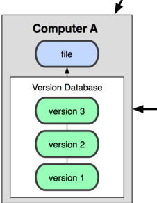
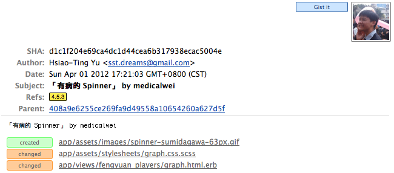
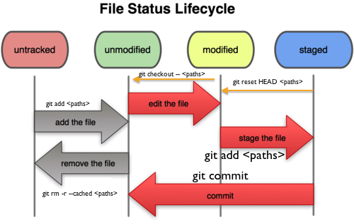
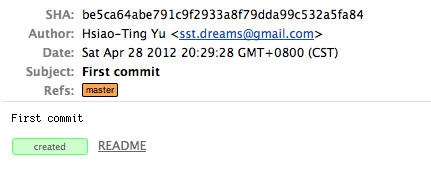

寫給大家的 Git 教學
第三版，2012
Littlebtc (Hsiao-Ting Yu)
改寫自 Scott Chacon 的「Pro Git」電子書。
Part 1
Why Git
為什麼要版本控制？為什麼要用 Git？
這是程式設計師的日常
當你寫了一個新東西，卻發生了以下的悲劇…
- 忘了自己改了哪些地方
- 把舊的東西改壞了，改不回來
- 拿去跟別人的成果合併，卻兜不起來
→有沒有辦法解決？
有！「版本控制系統」
當你使用版本控制系統時：
- 忘了自己改了哪些地方→每次的更動都會被記錄下來
- 把舊的東西改壞了，改不回來→可以隨時退回到過去的版本
- 拿去跟別人的成果合併，卻兜不起來→提供機制處理多人協作的衝突
→「凡走過必留下痕跡」、「三個臭皮匠，勝過一個諸葛亮」，這就是版本控制的精神。
版本控制系統的演進
- 單機式（rcs）
- 中心式（CVS、Subversion）
- 分散式（Git、Mercurial、Bazaar）
版本控制系統的演進

單機式
為了達成「凡走過必留下痕跡」：
rcs (1982) 屬於此類（至今還有人使用！）
→問題：兩人以上協作時，如何同步每個人的版本資料庫？
版本控制系統的演進

中心式
為了讓三個臭皮匠可以一起作業：
- 版本資料庫放在中心統一控管
- 每個人從中心取出（Checkout）東西
- 修改完後將內容提交（Commit）回中心
早期盛行CVS (1990)、現在主流為 Subversion (2000)
→中心一旦故障，大家的作業都會出問題，該怎麼辦？
版本控制系統的演進

分散式
…何不讓每個人都有一份完整的資料庫？
- 「大家都能獨立工作」
- 「Server 爛了？不要緊，拿到一份好的資料庫灌回去就可以全部復原！」
Git (2005) 是主流、Mercurial (2005) 跟 Bazaar (2005) 也很盛行
→又來了：怎麼解決每個人之間的同步問題？
引進非線性的開發模式！
Git 的歷史
簡言之：為了解決 Liunx 核心的開發問題，所以有了 Git
- 過去，Linux 核心開發沒有使用版本控制系統（主因是 Linus Torvalds 不喜歡中心式的系統）。
- 2002 年，開始改用專有的分散式版本控制系統 BitKeeper，讓自由軟體/開源社群不滿（自由的東西用非自由的開發工具，成何體統？）。
- 2005 年 BitKeeper 跟 Linux 開發團隊鬧翻，不再免費供應系統。Git 的開發自此開始。
Git 的強項
- 快
- 簡單
- 非線性開發
（分支、合併、不受單一主線拘束）
- 完全分散式
- 處理超大資料的能力
（Linux 核心的程式碼超過一千萬行！）
這些專案都在用 Git
- Linux Kernel
- Android
- GNOME
- KDE
- PHP (Since 2012)
- Ruby on Rails
- django
Part 2
Setup Git
設定屬於你的 Git 開發環境。
設定 Git
Git 的操作大部分都是透過命令列，但也有許多的圖形介面工具。
無論如何，以下的設定都是必要的：
- 安裝 Git 軟體
這不用說了吧 XD
- 產生一個 SSH 金鑰
為什麼？因為 Git 可以利用 SSH 進行使用者驗證
- 調整 Git 的組態
設定姓名和電子郵件地址
有懶人包幹嘛不用？
GitHub 他們寫了三種平台下安裝 Git 的懶人包，以下提供連結：
「Add your SSH key to GitHub」這個步驟是 GitHub 的設定，可以跳過去 :)
Windows
照上面懶人包安裝後，您會把 Git for Windows 安裝好。
Git for Windows 有兩種不同的使用方式：
- Git Bash：一個 Bash Shell，你可以在裡頭以命令列方式使用 Git。
- Git GUI：一個簡單的圖形使用介面。
圖形介面工具推薦
MacOS X
安裝完後在「工具程式」→「終端機」以命令列使用 Git。
（Mac 下另外建議您使用 iTerm 2 取代內建的終端機程式）
圖形介面工具推薦
- GitX
免費，有只能瀏覽歷史和 Commit 的原始版，和後人改過的全方位版
- GitHub for Mac
免費，也能用於非 GitHub 托管專案喔！
但對於 Branch 的管理較為簡化，使用上要注意。
- Tower（USD $59）
Linux
在終端機中以命令列使用 Git。
圖形介面工具推薦（GNOME）
- RabbitVCS
免費，Nautilus 檔案管理員下操作
Ubuntu 12.04 內附的版本沒有 Git 支援，請參照官網設定 PPA 安裝
- gitg
GitX 的 GNOME fork
- giggle
Part 3
Git Basics
介紹如何建立一個 Git 的 Repository，並在其中新增新的 Commit。
所有事都能單獨在本機進行！

- 你不只有一份完整的資料庫……
- 閱讀版本歷史、提交變更這些動作都可以在本機進行
- 不需要網路連線也能單獨工作！
建立 Repository
- 「Repository」（倉庫、套件庫）是 Git 對版本資料庫的稱呼。
- 下達
git init 後，會在該目錄裡建立一個 Repository。
- Repository 所需的檔案會放置在
.git 目錄之中。
（因此，千萬不要誤砍了！）
為了方便解說，以下操作全部都在命令列下進行。
若使用圖形介面，請試著找出相同的使用方法吧！
建立 Repository
範例：建立一個空的目錄叫 playground，在那裡建立 Git Repository：
mkdir playgroundcd playgroundgit init
Tips： 其實也可以用 git init playground 一次建空目錄和 Repository
基本觀念：Commit
- 版本控制就是把當時 Repository 內所有檔案的現狀作記錄與控制。
- 而在 Git 之中，每一次的「現狀紀錄」稱之為 Commit。
- Commit 中也包含作者、時間、紀錄資訊（Log）、前後對應 Commit 等資訊，方便追蹤管理。

基本觀念：Staging
- 在您的目錄（稱為 Working Directory，工作中目錄）之中作業。
- 唯有放進 Staging Area（暫存區）裡的更動會被 Commit。
- 為什麼？(1) 多項目同時作業下，可以分開切成多個 Commit，方便管理。 (2) 不用擔心未完成或暫存的東西影響到 Commit。
- 就算是同一檔案，也可以只有某幾行加入 Staging 中！

Diagram from Why Git is Better than X, MIT License
基本觀念：檔案狀態
- untracked：沒有納入版本控制範圍內的檔案。
- unmodified / modified：沒有變動 / 有變動還沒有 Staging 的檔案。
- staged：Staging Area 中的檔案。

相關的指令（新增）
git add <paths>：把檔案新增或變動加入 Staging Area。git status：檢視檔案狀態。git commit：開啟編輯器，確認變動並輸入訊息後送出 Commit。
指令中加 -m 'Commit 訊息' 就會直接 Commitgit commit --amend：「更動」上一次的 Commit
將上次 Commit 跟新的更動合併為新的 Commit。
小秘訣：git commit -a 會將所有變更都加入 Staging Area 之後 Commit。（但還是建議您善用 Staging :P）
相關的指令（移除或補救）
git reset HEAD <paths>：把檔案中 Staging 的部份注銷掉。git rm <paths>：將檔案從版本控制中移除後，刪除檔案。
加 -r 採遞迴方式，--cached 則不刪除原來檔案。git checkout -- <paths>：恢復檔案為未更動的狀態（對 Staging 的部份無效）。
實例：第一個 Commit
用 touch README 建立一個空的 README 檔案後：
git add README
git commit -m 'First commit'
這樣就會建立一個 Commit，將 README 納入版本控制之中。

Commit 的內部結構
- 利用
tree 存放檔案一覽，將檔案存在 blob 裡。
- 所有的資料都以 SHA1 checksum 標記，防止損毀或中途更改。
- Git 針對每個檔案版本獨立紀錄，而非只紀錄之間的差異，更具便利性。

Part 4
Tree Management
介紹 Git 樹狀的歷史管理方式，Branch 和 Tag 的使用，以及 Merge 和 Rebase 的概念。
當 Commit 超過一個時…
- Git 會用樹狀的方式紀錄 Commit 的繼承關係。
- 其實踐方式就像是 Linked List，在每個 Commit 中記下他的 Parent。
- 而 Git 允許 Commit 的分岔和合併，因此可以進行複雜的樹狀操作。

Tag 與 Branch
在 Git 中，Tag 和 Branch 是指向某一特定 Commit 的指標：
- Branch 是會動的：使用中的 Branch，指向的位置會在新 Commit 出現後自動移動。每一個 Repository 都會有一個預設的 Branch 叫
master。
- Tag 是不會動的：對某一個特定的 Commit 加上標記，指向位置不會隨新 Commit 出現更動。用於標記釋出版本或里程碑。

多個 Branch 的管理
- Git 會使用
HEAD 指標去紀錄目前所使用的 Branch。
- 可以隨時新增、切換和刪除 Branch（因為它只是指標！）
- 如果不同的 Branch 落在岔開的分支，可以透過 Merge 「合起來」，或透過 Rebase 「接上去」。
#